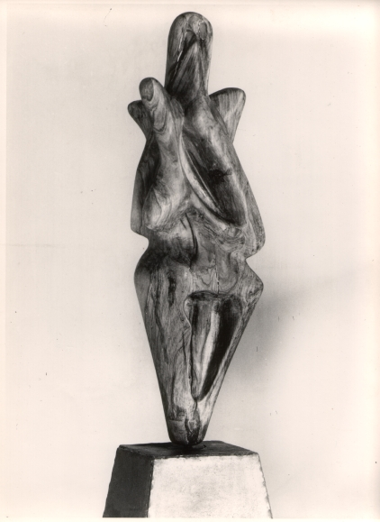

← Tutte le opereAll works
UR 017
BallerinaBallerina
legno di ulivo, 1967olive wood, 1967
- CatalogoCatalogue
- UR 017
- AnnoYear
- 1967
- TecnicaMedium
- legno di ulivoolive wood
- TipoType
- sculturasculpture
- DimensioniDimensions
- da completareto be completed
- CollocazioneLocation
- da completareto be completed
- VisteViews
- 2